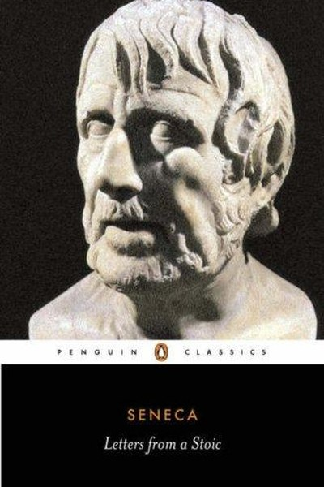

Library › Self-Improvement
Letters from a Stoic — Summary & Key Lessons

Two thousand years of practical wisdom on time, money, anger and death.
📖 OPEN THE FULL INTERACTIVE BREAKDOWN →🌐 Read it in Hindi, Hinglish, Gujarati, Tamil & 22 more languages — free, with audio.
💡 The Big Idea
Seneca, a rich Roman statesman who lived under a murderous emperor, wrote letters of practical philosophy to his friend — not abstract theory but daily drills for a good life. His themes are timeless: time is the only true possession; wealth is a tool, not a master; anger is a temporary madness; death is the great teacher; and philosophy is not a lecture subject but a way of living. The letters are a manual for keeping your mind free in an unfree world.
🧠 The 7 Key Lessons
Lesson 1: Time Is the Only Real Possession
On the Shortness of Life
Seneca's most famous theme: people guard their money fiercely but let their time leak away. Life is not short — we make it short by wasting it. The lesson: audit your days like you audit your money. The hours spent on anxiety, grudges and pointless busyness are stolen from a life you claim to value. The richest person is not the one with most wealth but the one who owns their time.
📖 Example: Seneca points out that busy people — chasing status, wealth and distraction — are the most deprived of time, since they live in the future, never in the present. Read the full example →
⚡ Do this: Track your time for three days in one-hour blocks. Identify the biggest single leak and cut it by half this week.
Lesson 2: We Suffer More in Imagination Than in Reality
On Fear
Seneca's observation is now confirmed by psychology: most of what we fear never happens, and what does happen is rarely as bad as imagined. The mind inflates future pain to motivate us — and then we live inside that inflation. The lesson: when fear arrives, ask what specifically could happen, how likely it is, and what you would actually do. Fears examined are fears halved.
📖 Example: Seneca tells Lucilius to rehearse every possible disaster in advance — not to be pessimistic, but so that nothing can take him by surprise. Read the full example →
⚡ Do this: Write your worst-case scenario for one worry. Then write your plan B for it. Notice how the concrete plan shrinks the fear.
Lesson 3: Wealth Is a Servant, Not a Master
On Riches
Seneca was rich and defends wealth — provided the rich person owns the wealth, not the reverse. The test: can you lose it and remain yourself? Money is a tool for freedom and generosity, but the person who needs money's approval is enslaved by it. The lesson: earn, save and enjoy — but keep your identity independent of your bank balance. Wealth that owns you is poverty in disguise.
📖 Example: Seneca contrasts the man who uses wealth for comfort and kindness with the miser who guards it like a prisoner guards his cell. Read the full example →
⚡ Do this: Write down what you would still be, and still do, if you lost half your income tomorrow. Strengthen that identity.
Lesson 4: Anger Is Temporary Madness — Delay Is the Cure
On Anger
Seneca's diagnosis of anger: a brief insanity that makes us do what we'll regret at leisure. His prescription is stunningly modern: delay. When provoked, do nothing — ask for time, count, walk away. Anger's power is in its speed; remove the speed and you remove the damage. The lesson: you can't stop the first flash, but you can refuse the second act.
📖 Example: Seneca recommends asking yourself: will this matter tomorrow? Will it matter to the person who provoked me? The questions force the delay that kills the anger. Read the full example →
⚡ Do this: Create a personal anger rule: before any response to provocation, take 60 seconds and write one sentence about what you actually want from this situation.
Lesson 5: Memento Mori — Death Is the Great Teacher
On Death
The Stoic practice of remembering death is not morbid — it is the ultimate prioritizer. Seneca argues that people who live as if they have infinite time drift into triviality; those who know time is limited choose what matters. The lesson: 'this could be my last chance' is not fear — it is focus. Use death as a filter: if you wouldn't do it on your last day, why are you doing it today?
📖 Example: Seneca advises living each day as a complete life — 'begin at once to live, and count each separate day as a separate life' — so no day is a waste. Read the full example →
⚡ Do this: Ask before each commitment this week: would I spend my limited time on this? Let the answer do the filtering.
Lesson 6: Adversity Is Training, Not Punishment
On Hardship
Seneca's athletic metaphor: the athlete who never faces resistance never develops strength. Hardship, he argues, is the gym of the soul — a chance to practise courage, patience and dignity. The lesson: reframe difficulties as reps, not as verdicts. The person who treats every setback as training compounds resilience; the person who treats it as persecution stays weak and bitter.
📖 Example: Seneca writes that it is precisely in adversity that the good person becomes visible — like a ship proving its worth in a storm. Read the full example →
⚡ Do this: For one current difficulty, write: 'What strength is this situation training in me?' Then practise that strength deliberately today.
Lesson 7: Philosophy Is a Way of Living, Not a Lecture
On Study
Seneca mocks people who collect philosophy like furniture — quoting great lines without living them. The test of learning is not knowledge but behaviour: are you kinder, calmer, braver? The lesson: studying without application is entertainment. Every insight must become an action or it decays. Read less, practise more — a single principle applied beats a library of principles admired.
📖 Example: Seneca warns Lucilius against hopping between teachers and schools like a tourist — depth and practice beat breadth and tourism. Read the full example →
⚡ Do this: For every book or article you finish this month, write one specific action you will take from it within 48 hours.
✅ 5-Step Action Plan
- Audit your time for 3 days and cut your biggest leak by half.
- Write worst-case scenarios and plan Bs for your top worry.
- Identify your identity outside your wealth — and strengthen it.
- Install a 60-second delay rule before any angry response.
- Use the death filter before every commitment this week.
⚠️ When This Doesn't Work
Seneca's indifference to wealth is the noblest philosophy ever written — and it was written by a man with a fortune and a death sentence, which makes the calm easier. Anil Ambani lived the involuntary version: from Asia's richest man to owing billions, and the Stoic's 'wealth doesn't matter' is far harder to feel when the debt collectors are real and your brother's empire is the yardstick. Stoicism as preparation is wisdom; Stoicism as consolation after the fall is survival. Read Seneca before the crash, not after — the book underweights how much of its serenity comes from timing.
💀 The Graveyard Proves It
📉 Anil Ambani — From World's 6th Richest to Court-Declared Broke. Burn: $42B → 'net worth zero'. Read the full case study →
💬 Best Quotes from Letters from a Stoic
- “It is not that we have a short time to live, but that we waste a lot of it.”
- “We suffer more often in imagination than in reality.”
- “Begin at once to live, and count each separate day as a separate life.”
Interactive version: mark lessons as read, listen in your language, share quote cards.